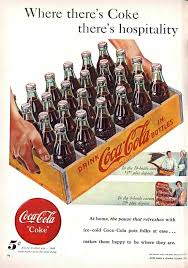
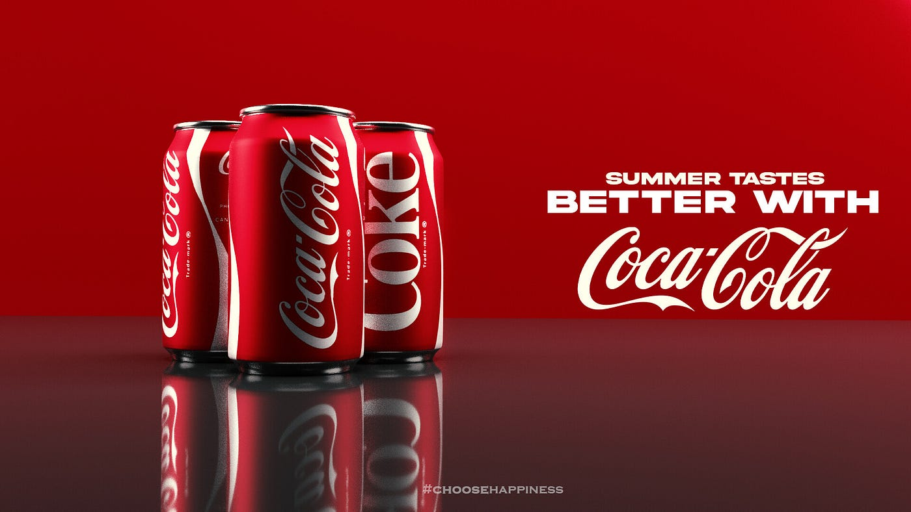

Colour Identity
Coca-Cola Red is more than a colour — it is a feeling. One of the most strategically deployed hues in commercial history, it signals energy, warmth, excitement, and familiarity simultaneously.

The Signature Colour
The dominant red has been associated with Coca-Cola since at least 1891. Physiologically, red stimulates appetite, raises heart rate, and creates urgency — making it ideal for a consumer beverage brand. It became so tied to Coca-Cola that the brand practically owns it in people's minds worldwide.
Contrast & Clarity
White has always been Coca-Cola's secondary colour — used for the script wordmark and the Dynamic Ribbon Device. White represents purity, refreshment, and clarity, providing maximum contrast against the dominant red while keeping the identity clean and legible at any scale.
Restraint & Sophistication
Used sparingly in editorial, luxury tie-ins, and Coca-Cola Zero branding. The black palette signals maturity and sophistication — a deliberate counterpoint to the brand's typically vibrant personality. Black allows sub-brands to carve distinct identities within the Coca-Cola family.
One of the most enduring stories in branding is the claim that Coca-Cola invented the modern image of Santa Claus — the jolly, red-suited figure popularised in holiday advertisements illustrated by artist Haddon Sundblom beginning in 1931. While historians note that the red-suited Santa existed in imagery before Coca-Cola (Thomas Nast drew similar depictions in the 1800s), there is no question that Sundblom's Coca-Cola Santa ads, running annually from 1931 to 1964, cemented the warm, rotund, red-and-white image of Santa Claus in the global imagination. The campaign ran in The Saturday Evening Post, National Geographic, and Ladies Home Journal, reaching millions.

